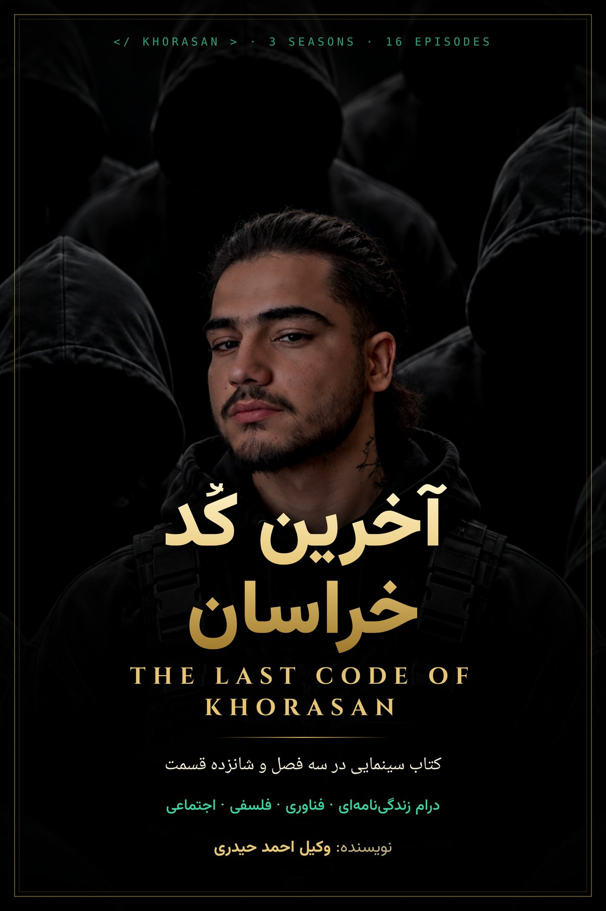
آخرین کُد خراسان
داستان مردی که با یک گوشی، برنامهنویسی آموخت و «خراسان دیجیتال» را ساخت؛ از شب اول و یک سؤال ساده، تا سیستمی که خاموش شد، درهایی که باز نشدند، و آیندهای که هنوز نوشته نشده است.
قسمتها
سه فصل، شانزده قسمت؛ هر قسمت با پوستر اختصاصی.
فصل اول: آغاز رؤیا و تولد مسیر
از یک سؤال در شب تا نامی که روی اینترنت نوشته شد. احمد زبان ماشین را میآموزد، ذهن مهندسیاش بیدار میشود و خراسان دیجیتال متولد میشود.
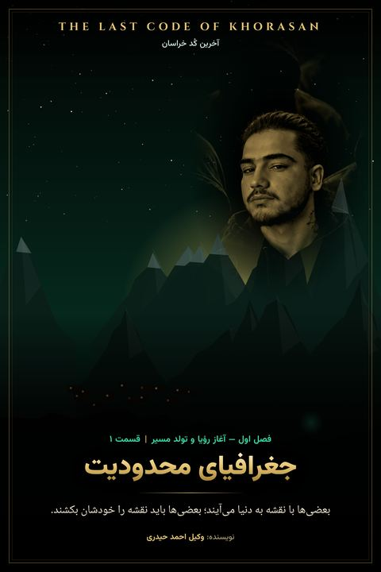
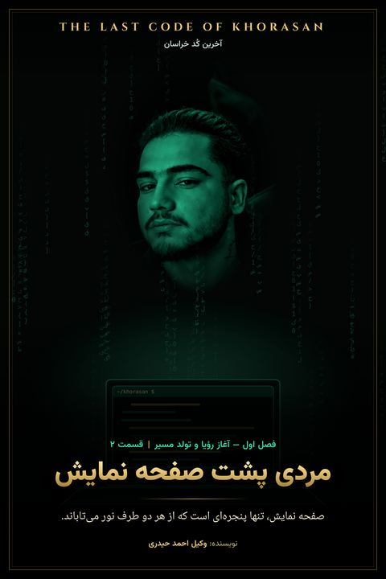
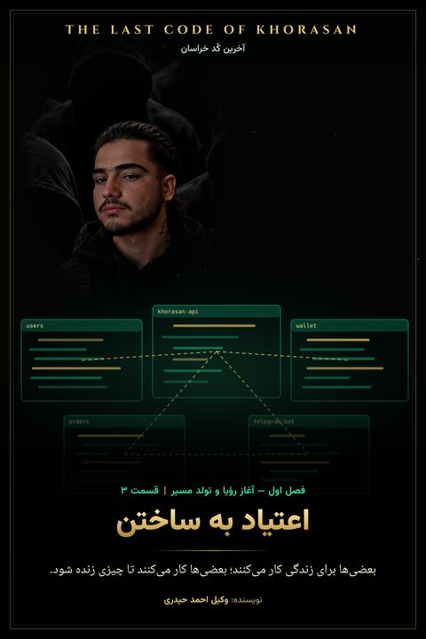
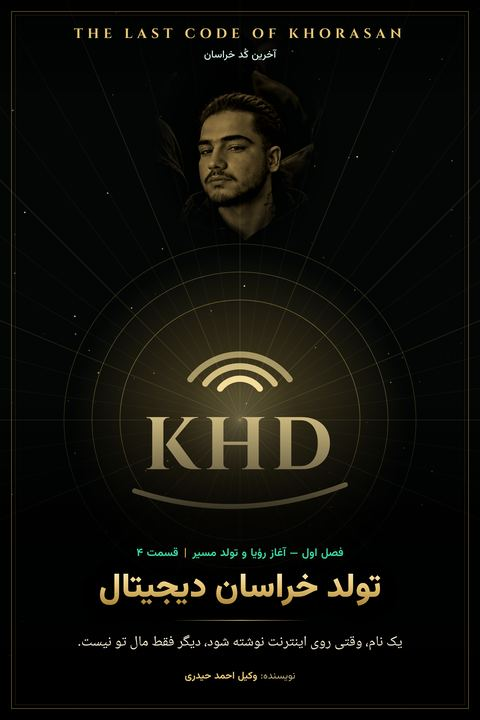
فصل دوم: جنگ با محدودیتها و ساختن امپراتوری دیجیتال
کیف پولی که اعتماد را ثبت میکند، شبکههایی که درهها را به هم وصل میکنند، کاربان که حق کارگر را دیدنی میکند، و امپراتوری کوچکی روی ابرها.
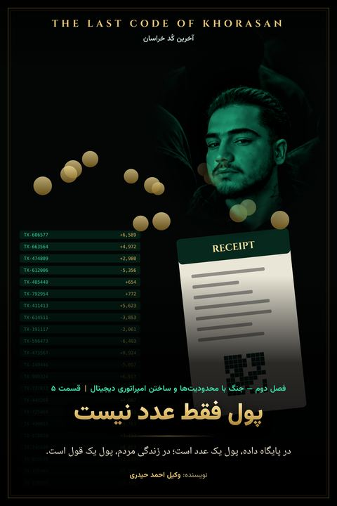
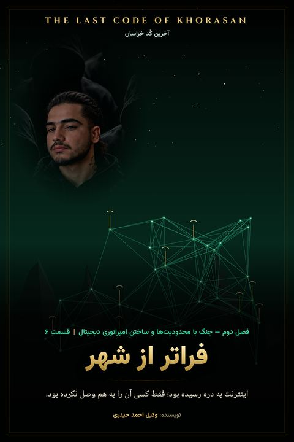
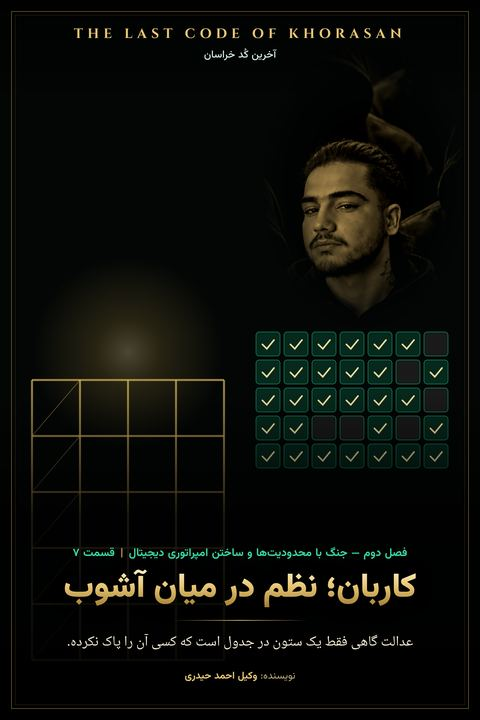
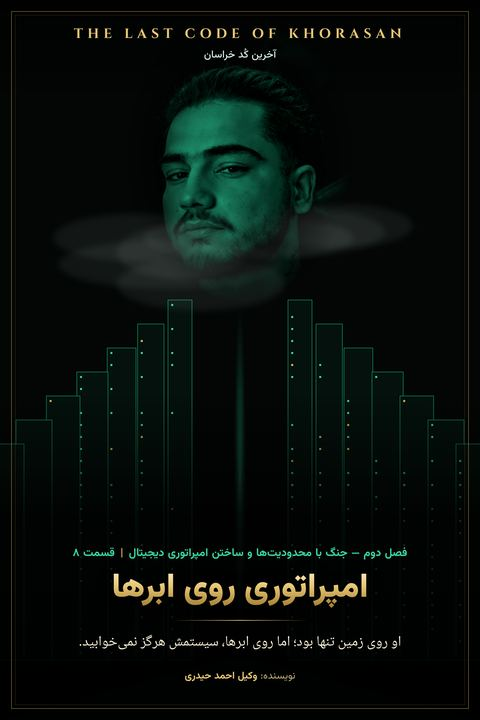
فصل سوم: سقوط، بازسازی و آیندهای که هنوز نوشته نشده است
سیستمی که خاموش میشود، درهایی که باز نمیشوند، حسابی که باید درست شود، بهای استقلال، و شجاعت شروع دوباره تا قلهای که از آن، آینده دیده میشود.
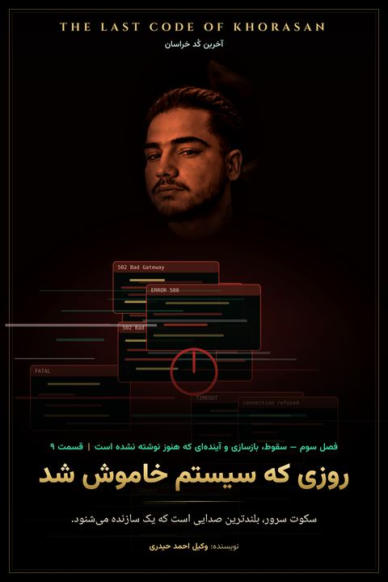
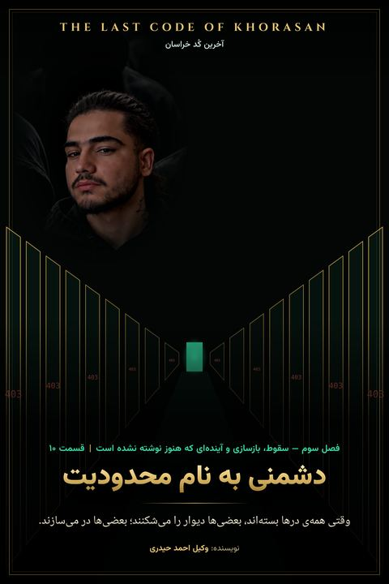
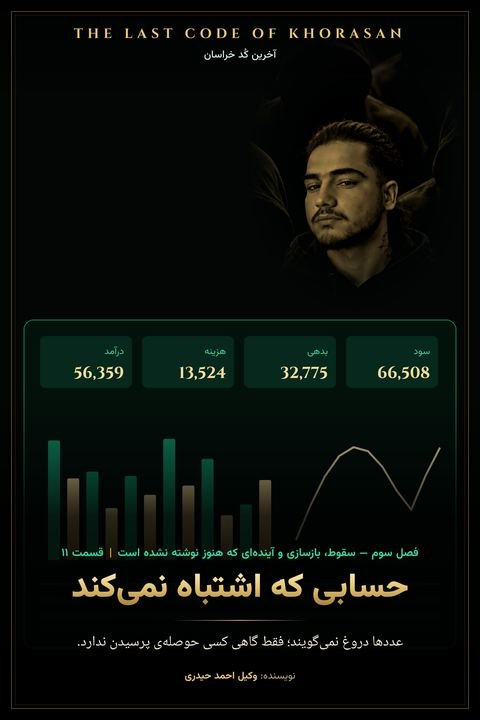
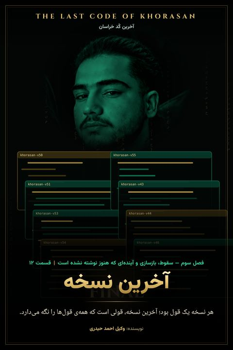
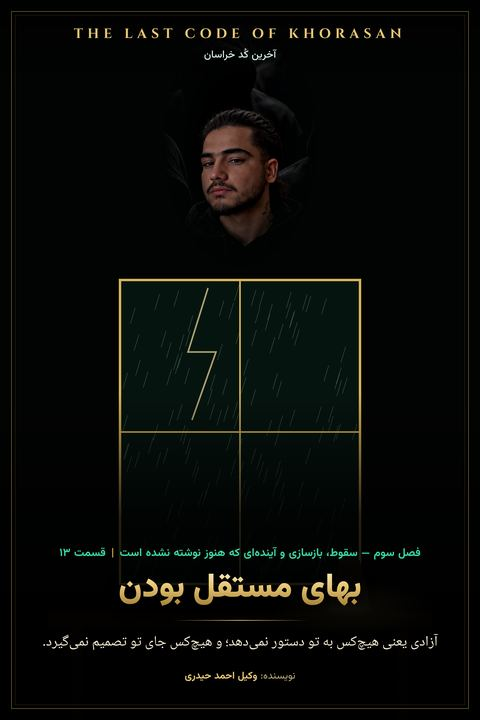
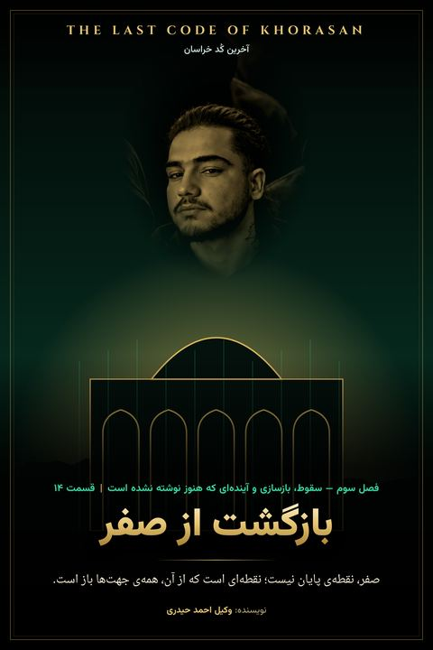
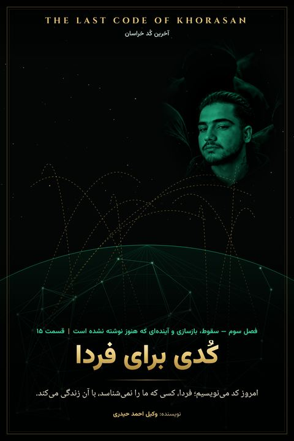
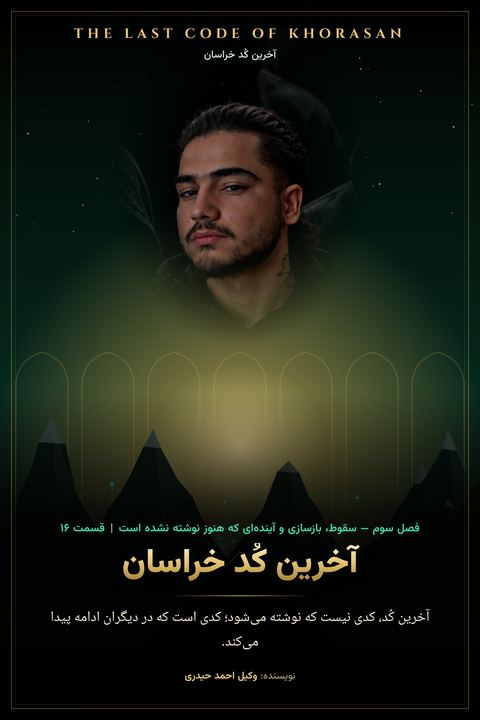
دربارهی کتاب
این کتاب، داستان یک موفقیت بزرگ نیست. دستکم، نه هنوز.
این کتاب، داستان یک مسیر است. مسیری که از یک سؤال ساده شروع شد: «چرا کسی این را نمیسازد؟» و به جایی رسید که هنوز در حال ساخته شدن است.
در این شانزده قسمت، با مردی همراه میشوید که برنامهنویسی را با یک گوشی آموخت، سیستمی مالی ساخت که پول مردم را نگه میدارد، شبکههای وایفای روستایی را به هم وصل کرد، اپلیکیشنی برای حساب کارگران منتشر کرد، و بارها با شکست، خطا، و درهای بسته روبهرو شد.
نوشتن این داستان، به شکل یک مجموعهی سینمایی، انتخابی آگاهانه بود. زندگی واقعی، پر از روزهای تکراری و کارهای بیصداست. اما زیر این تکرار، درامی جریان دارد که فقط وقتی دیده میشود که آن را قاب بگیریم: درام تصمیم، درام تردید، درام مسئولیت.
برای همین، در این کتاب، تردید شکل یک شخصیت پیدا کرده است: «سایه». حسابداری به چهرهی یک پیرمرد خردمند درآمده. زیرساخت ابری، شهری از نور شده. و محدودیتها، راهرویی بیپایان از درهای بسته.
اما زیر همهی این نمادها، چیزی واقعی هست: پروژههایی که واقعاً ساخته شدهاند، مشکلاتی که واقعاً حل شدهاند، و رؤیاهایی که هنوز در انتظارند.
امیدوارم این کتاب، برای کسی که در شبی مثل شب اول، به سقف خیره است و فکر میکند کاری از دستش برنمیآید، نشانهای باشد: که میشود. آرام، با خطا، با تردید؛ اما میشود.
پایانبندی مجموعه
شانزده قسمت. سه فصل. یک مسیر.
فصل اول، داستان تولد بود: از یک سؤال در شب، تا نامی که روی اینترنت نوشته شد. وکیل احمد حیدری زبان ماشین را آموخت، ذهن مهندسیاش بیدار شد، و خراسان دیجیتال به دنیا آمد.
فصل دوم، داستان ساختن بود: کیف پولی که اعتماد را ثبت میکرد، شبکههایی که درهها را به هم وصل میکردند، کاربان که حق کارگر را دیدنی میکرد، و امپراتوری کوچکی روی ابرها.
فصل سوم، داستان آزمون بود: سیستمی که خاموش شد، درهایی که باز نشدند، حسابی که باید درست میشد، نسخههایی که باید یکی میشدند، بهایی که باید پرداخته میشد، و شجاعت شروع دوباره.
و در پایان، وکیل احمد حیدری بر قلهای ایستاد که در قسمت اول، فقط سایهای دوردست بود. نه چون به مقصد رسیده بود، بلکه چون فهمیده بود مقصد، خود راه است.
این مجموعه پایان دارد. اما داستان، نه. خراسان دیجیتال هنوز در حال ساخته شدن است. کدهایی هنوز نوشته میشوند. رؤیاهایی هنوز در انتظارند. و آینده، هنوز نوشته نشده است.
یادداشت نویسنده
وقتی تصمیم گرفتم داستان این سالها را به شکل یک مجموعهی سینمایی روایت کنم، میدانستم که با خطر بزرگنمایی روبهرو هستم. ساختن یک اپلیکیشن، در مقایسه با بسیاری از داستانهای جهان، کار کوچکی است.
اما هر کسی که چیزی از هیچ ساخته باشد، میداند که در دل این کار کوچک، جهانی بزرگ از تصمیم، تردید و امید هست. خواستم این جهان را نشان دهم.
در این کتاب، تلاش شده است میان واقعیت و داستان مرز روشنی بماند. پروژهها واقعیاند. مشکلات فنی، در کلیتشان واقعیاند. اما صحنهها و گفتوگوها بازسازی داستانیاند و همهی شخصیتهای فرعی ساختگیاند. هیچ خاطرهی خانوادگی یا رویداد خصوصیای جعل نشده است. و هر قابلیتی که هنوز در حد برنامه است، در متن نیز برنامه نامیده شده.
اگر از این کتاب فقط یک جمله در ذهن شما بماند، دوست دارم این باشد: هر روز، حتی یک خط.
وکیل احمد حیدری
دانلود
PDF کتاب کامل و PDF جداگانهی هر قسمت، جلد، بنر و پوسترها.